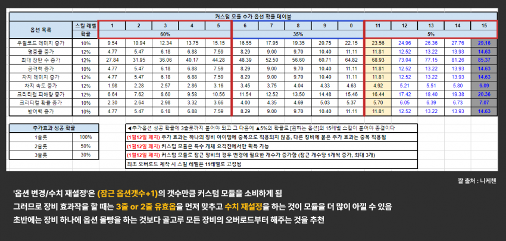

① 제일먼저 옵션작하려는 니케의 옵션을 어느정도로 맞추고 싶은지에 대해 정해야됨
| 분류 | 설명 | 예시 | 옵션작 기준 |
|---|---|---|---|
| 1. 오버장비만 올리는 캐릭 | 자체딜없는 시공증서폿 | 토브, 메이드 마스트 등 | 옵션 무관 |
| 2. 우코 전용 딜러 | 우코에서만 쓰이는 2-3덱딜러 | 철갑의 레후, 전격의 아인 등 | 8옵션작 정도 |
| 3. 종결 딜러 | 비우코사용, 우코에서도1-2덱딜러 | 수화,라피,리벌레리오,신데렐라,미하라 등 | 종결작 |
| 4. 딜러 언저리 | 우코에서만 쓰이는 4-5덱딜러 | 수냉의 팬텀, 작레이 등 | 4우코작 |
| 5. 애정캐 |
1. 오버장비만 올리고 치운다 ex) 누아르 나가 토브 등등(시전자공증 스킬이 있는 서폿)+ 비딜러 캐릭
- 이 캐릭들은 오버 올리는 것 자체에 의미가 있는 것이지 옵션은 신경쓰지 않는것이 좋다.
몰론 우공장뜨면 제일 좋고 솔레에서 영끌한다고 우코캐릭 돌리기도하지만
2. 우코 전용 딜러 : 4우4공+a 정도 ex) 철갑의레후, 전격의아인 등 속성기준 솔레2-3군
3. 종결을 봐야겠다 (유효옵10개 이상) ex) 수화, 라피, 신데, 리버렐리오, 미하라
- 현시점에서 극고점 딜러 4캐릭 옵션작방법은 밑에 서술
->특특요가 나옴에 따라 모듈수급량이 늘어나서 종결작을 찍는게 어느정도 개인의 선택에 따라 할수있게되었음
4. 딜러언저리 4우코만 띄우고 치운다 ex) 수냉의팬텀, 작열의작레이 등 딜러이긴 하지만 과투자하기 어려운 솔레4-5군딜러
5. 애정캐는 알아서
② 상황에 따른 옵션작
1,4,5 는 그냥하면 될것이고
위에서 2의경우
8옵션작의 경우 보통 4우4공 (+1장)정도로 띄우게되는데
우공 둘중 하나가 어느줄에 뜨든 상관없이 묶고 돌리는게 이득이라고 결론났음
즉 4우공작만 할거면 첫째줄 공이든 우코든 잠그고 돌리는게 이론적으로 맞다
둘째줄이나 셋째줄은 말할것도없이 잠그고하면됨
위에서 3의경우
12옵션작의 경우 보통 4우4공 나머지4는 니케별로 장/크/크/차속 등이 다르다
종결작의 경우에 셋째줄 우/공 아니면 안잠그는게 좋음
가장 옵션작이 복잡한 앨리스를 예로 들면 (요즘은 종결안하지만) 결과적으로 2개만있어도 되는 차속 또는 장탄을 잠글경우
다른장비에서 추가적으로 떠서 어지러워지는 경우가 빈번함 모듈 100개이상을 투자해야 할지모르는 상황에서 선택의 폭의 넓히는 쪽으로 베이스를 만드는게좋음
3-1. 현재 1유효옵
첫째줄 유효옵 - 그냥 돌린다
둘째줄 유효옵- 그냥돌리거나 묶고 돌린다 (우공 수치상옵)
셋째줄 유효옵 - 묶고 돌린다.
3-2. 현재 2유효옵
첫째줄둘째줄 유효옵 - 그냥돌리거나 2만 묶고 돌린다
13 유효옵 - 3만묶고돌리거나 13둘다 묶고 돌린다
23유효옵 - 23둘다 묶고 돌린다.
묶고 돌린다는게 말로는 쉽지만 굉장히 시간과 모듈이 많이 들기 때문에 가장 먼저 돌려야 할것들은
투자대비 데미지상승 비율을 생각한다면 0유효옵과 첫째줄 1유효옵임
종결을 내는데에 있어서 가장 핵심적인것은 셋째줄 유효옵을 얼마만에 얻어내는가임
정리하면
| 유효옵션 수 | 유효 옵션 위치 | 처리 방식 |
|---|---|---|
| 1개 | 첫째줄 | 그냥 돌림 |
| 1개 | 둘째줄 | 그냥 돌리거나 해당 줄만 잠금 |
| 1개 | 셋째줄 | 잠그고 돌림 |
| 2개 | 첫째+둘째줄 | 그냥 돌리거나 둘째줄만 잠금 |
| 2개 | 첫째+셋째줄 | 셋째줄만 또는 둘 다 잠금 |
| 2개 | 둘째+셋째줄 | 둘 다 잠금 |
③ 수치작
본문에서 썼듯이 가장 효율이 좋은건 세줄 유효만들고 수치돌리는거임 같은값주고 독립시행을 세배로 하는거니까 당연한데
당장 수치가 너무 낮거나 솔레직전이라서 우코수치가 필요하다 싶으면 수치부터 돌리고 잠그는 방법도 많이들 선택함
여튼 최우선 옵션(보통 우공)부터 극옵에 가까운 수치를 맞추는게 우선임
그러고 잠근 뒤에 나머지 두개 돌리는 식으로..
요약하자면
3. 급하게 하지마라 4오버 종결시키는데 모듈 세자리로듦
4. 락키도 모듈이나 다름없음. 모듈로 잠그는게 이득일땐 모듈로잠궈서 아끼자